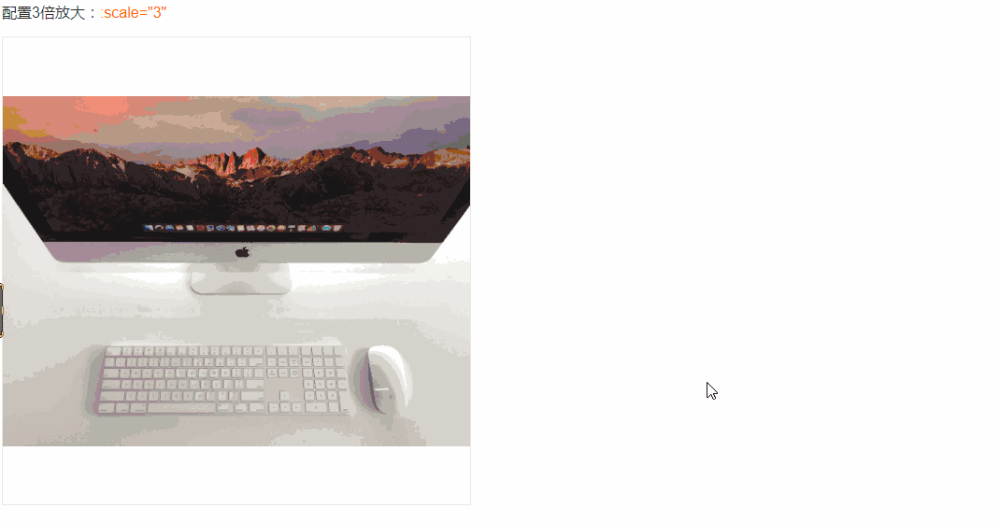

仿淘宝详情页图片鼠标移过去可对图片放大显示在右侧
效果图如下图，此功能支持PC端与移动端
接下来进入代码实现环节：
先准备两张图片，一张小图片叫 '土味.jpg'，大小160*91；一张大图片叫 ' 土味Big.jpg '，大小320*181。
大家看图片名字是什么就知道我要干什么，大家都懂的，接下来素材准备好了，进入代码环节：
html结构：
<div class="productLeft">
<!-- 左侧中图 -->
<div class="mdImg">
<img :src="qall" alt="">
</div>
<!-- 遮罩层 -->
<div v-show="isShow" class="marks" :style="{top:top+'px',left:left+'px'}"></div>
<!-- 遮罩层 玻璃板 superMarks -->
<div v-if="isPC==false" @touchstart.prevent="enter" @touchend.prevent="leave" @touchmove.prevent="marks" @click.prevent="sub()" class="superMarks" ></div>
<div v-if="isPC==true" @mouseenter="enter" @mouseleave="leave" @mousemove="marks" @click.prevent="sub()" class="superMarks" ></div>
<div v-show="isShow" class="lgImg">
<img :src="qallBig" alt="" :style="{top:topLgImg+'px',left:leftLgImg+'px'}">
</div>
</div>js部分：
export default{
name : 'blog-header',
data(){
return{
isPC:true,
// 大图片
qall: '../../static/image/土味.jpg',
qallBig: '../../static/image/土味Big.jpg',
isShow:false, //控制遮罩层marks和大图片是否显示"
left:0, //marks左移位置
top:0, //marks下移位置
leftLgImg:0, //大图lgImg移动的位置
topLgImg:0 //大图lgImg移动的位置
}
},
methods:{
//鼠标进入和离开
enter(){
this.isShow=true;
},
leave(){
this.isShow=false;
},
//遮罩层放大镜
marks(e){
var marksWidth=48;//marks的宽
var marksHeight=48;//marks的高
if(this.isPC==true){
//PC端
this.left=e.offsetX-marksWidth/2;
this.top=e.offsetY-marksHeight/2;
if(this.left<0){
this.left=0;
}else if(this.left>160){
this.left=160;
}
if(this.top<0){
this.top=0;
}else if(this.top>160){
this.top=160;
}
//大d图片除以小的图片的宽高
this.leftLgImg=-this.left*320/160;
this.topLgImg=-this.top*181/91;
}else{
//移动端
this.left=e.changedTouches[0].clientX-marksWidth/2;
this.top=e.changedTouches[0].clientY-marksHeight/2;
if(this.left<0){
this.left=0;
}else if(this.left>160){
this.left=160;
}
if(this.top<0){
this.top=0;
}else if(this.top>45){
//45就是小图片的高度的一半，91/2
this.top=45;
}
//大d图片除以小的图片的宽高
this.leftLgImg=-this.left*320/160;
this.topLgImg=-this.top*181/91;
}
}
},
mounted(){
if (navigator.userAgent.match(/(phone|pad|pod|iPhone|iPod|ios|iPad|Android|Mobile|BlackBerry|IEMobile|MQQBrowser|JUC|Fennec|wOSBrowser|BrowserNG|WebOS|Symbian|Windows Phone)/i,)) {
this.isPC = false;
} else {
console.log('PC端')
}
}
}css部分：
/* 左侧大小图样式 160*91 320*181*/
.productLeft{
width:160px;
position: relative;
}
/* 左侧中图 */
.mdImg,.mdImg>img{
width:160px;
height:91px;
margin-left: 15px;
}
/*遮罩层superMarks */
.superMarks{
width:160px;
height:91px;
background-color:rgba(220, 220, 220, 0);
position:absolute;
top:0px;
left:0px;
}
/* 遮罩层 */
.marks{
width:48px;
height:48px;
position:absolute;
background-color:rgba(220, 220, 220, 0.5);
/*top:0px; //内联设置了动态的top，left
left:0px;*/
}
/* 左侧隐藏大图 */
.lgImg{
width:160px;
height:91px;
overflow: hidden;
position:absolute;
top:0px;
left:195px;
border:2px solid #aaa;
background-color:#fff;
}
.lgImg img{
width:320px;
height:181px;
position:absolute;
/*top:100px;
left:100px;*/
}兼容：移动端可f12选择移动端查看（鼠标长按移动查看效果），pc端鼠标移动查看效果
大家的图片的路径记得要写对！！！
还有第二种方法（vue的写法）

先安装此插件：
# 安装 install npm install vue-piczoom --save
使用：
# 使用 use
--script
import PicZoom from 'vue-piczoom'
export default {
name: 'App',
components: {
PicZoom
}
}
--html
<pic-zoom url="static/aze.jpg" :scale="3"></pic-zoom>组件默认是100%的高宽，所以建议将组件包含在一个有固定高宽的容器内。如：
<div class="pic-box"> <!--pic-box:width:500px;height:500px-->
<pic-zoom url="static/imac2.jpg" :scale="3"></pic-zoom>
</div>虽然以上的两种方法已经可以满足我们了，
但还为大家在网上搜索到以下的实现方法，大家有兴趣可以移步观看：